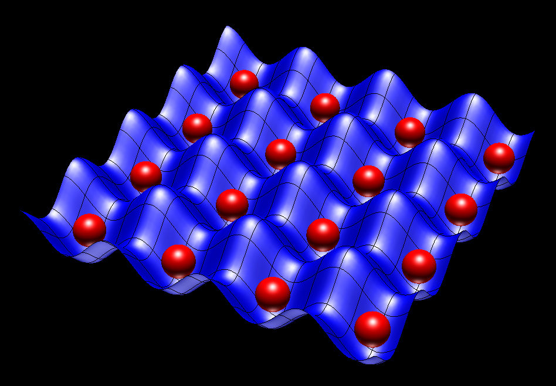
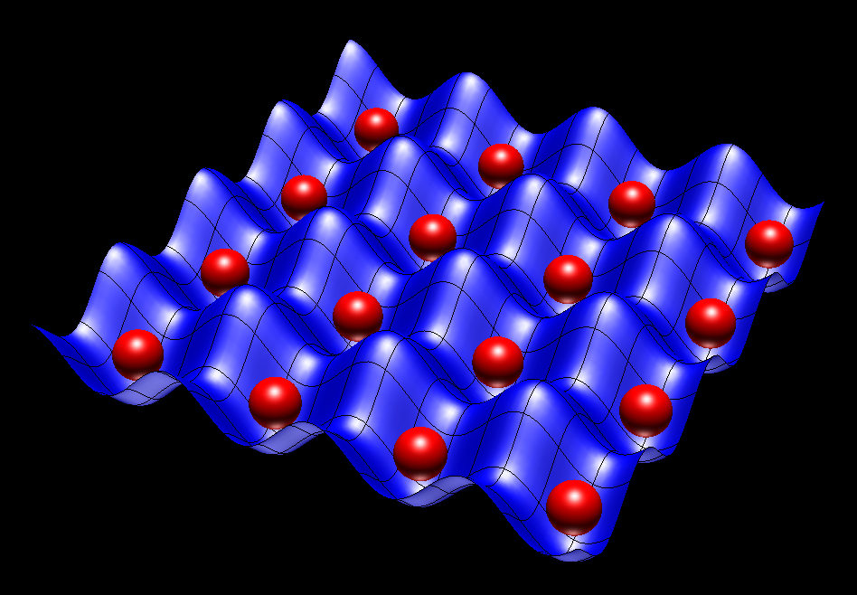

\[ \nonumber \newcommand{\br}{\mathbf{r}} \newcommand{\bR}{\mathbf{R}} \newcommand{\bp}{\mathbf{p}} \newcommand{\bk}{\mathbf{k}} \newcommand{\bq}{\mathbf{q}} \newcommand{\bv}{\mathbf{v}} \newcommand{\bx}{\mathbf{x}} \newcommand{\bz}{\mathbf{z}} \DeclareMathOperator*{\E}{\mathbb{E}} \]
Quantum Ground States from Reinforcement Learning
Work with Ariel Barr and Willem Gispen


Schrödinger Equation: 1 Particle
- Schrödinger picture: basic object is wavefunction \(\psi(\br)\)
\[ \overbrace{\left[-\frac{\nabla^2}{2m}+V(\br_i)\right]}^{\equiv H\text{, Hamiltonian}}\psi(\br) = E\psi(\br) \]
- Discretize on real-space grid \(L\times L\times L\)
Schrödinger Equation: N Particles
- Wavefunction now has \(N\) variables: \(\Psi(\br_1,\ldots \br_N)\)
$$ \overbrace{\left[\sum_i\left(-\frac{\nabla_i^2}{2m_i}+V(\br_i)\right)+\sum_{i<j}U(\br_i-\br_j)\right]}^{\equiv H}\Psi(\br_1,\ldots \br_N) = E\Psi(\br_1,\ldots \br_N) $$
- Requires grid in \(3N\) dimensions of \(L^{3N}\) points!
- Atoms / molecules are hard; matter (\(N\sim N_\text{A}\)) is impossible!
Variational Principle
- For approximate \(\Psi\) can upper bound ground state \(E_0\)
$$ \begin{align} E_0 &\leq \inf_{\lVert\Psi\rVert=1} \langle \Psi\lvert H\rvert\Psi\rangle\\ \langle \Psi\lvert H\rvert\Psi\rangle &= \int d\br_1\cdots d\br_N \Psi^*(\br_1,\ldots,\br_N)\left[H \Psi\right](\br_1,\ldots,\br_N) \end{align} $$
Challenges
- Form of \(\Psi\)
- Expectation evaluation
- Optimization
Form of \(\Psi\) (‘Feature Engineering’)
Wavefunctions of restricted form
- Factorized, leading to Hartree–Fock method
\[ \Psi(\br_1,\ldots,\br_N)=\psi_1(\br_1)\ldots \psi_N(\br_N). \]
- Jastrow factors include pair correlations
$$ \Psi(\br_1,\ldots,\br_N)\to \Psi(\br_1,\ldots,\br_N)\exp\left(\sum_{i<j}\phi(\br_i-\br_j)\right) $$
- Many more…
Expectation evaluation
\(|\Psi(\br_1,\ldots,\br_N)|^2\) a probability distribution, so evaluate
$$ \frac{\langle \Psi\lvert H\rvert\Psi\rangle}{\langle\Psi \vert\Psi\rangle} =\int d\bR\,|\Psi(\bR)|^2\frac{\left[H \Psi\right](\bR)}{\Psi(\bR)} $$
by Monte Carlo sampling. This is Variational Monte Carlo (VMC)
Neural Approaches
\(\Psi(\bR)\sim \textsf{NN}(\bR)\) and optimize!
Carleo and Troyer (2017): lattice models (more later)
many more…
Pfau et al. (2019): Fermi Net
TL;DR
\(\exists\) other formulations of QM including Feynman’s path integral
Let’s learn the path integral instead!
Outline
- The path integral
- Quantum mechanics and optimal control
- Learning the ground state process
- First experiments
- Next directions
Path integral

- Solution of time-dependent Schrödinger equation
$$ \begin{align} i\frac{\partial \psi}{\partial t} &= H\psi\\ \psi(\br_2,t_2) &= \int d\br_1 \mathcal{K}(\br_2,t_2;\br_1,t_1)\psi(\br_1,t_1),\\ \mathcal{K}(\br_2,t_2;\br_1,t_1) &= \int_{\br(t_1)=\br_1 \atop \br(t_2)=\br_2} \mathcal{D}\br(t)\exp\left(i\int_{t'}^t L(\br(t),\dot{\br})\right) \end{align} $$
- \(L(\br,\bv) = \frac{1}{2}\bv^2 - V(\br)\) is the classical Lagrangian
My machines came from too far away
Trouble with Feynman?
“Integration over paths” has never been defined
Kac (1949) found a workaround for heat-type equations
\[\begin{align} \frac{\partial\psi(\br,t)}{\partial t} = \left[\frac{\nabla^2}{2}-V(\br_i)\right]\psi(\br,t) \end{align}\]
- “Imaginary time” Schrödinger. Exponent in PI becomes real
\[ \exp\left(-\int_{t'}^t \left[\frac{1}{2}\dot\br^2 + V(\br)\right]\right) \]
Feynman–Kac (FK) Formula
…expresses \(\psi(\br,t)\) as expectation…
$$ \psi(\br_2,t_2) = \E_{\br(t)}\left[\exp\left(-\int_{t_1}^{t_2}V(\br(t))dt\right)\psi(\br(t_1),t_1)\right] $$
…over Brownian paths finishing at \(\br_2\) at time \(t_2\).
Ground State from PI
For \(t\to\infty\) only ground state contributes
Spectral representation in terms of \(H\varphi_n = E_n\varphi_n\)
\begin{align} K(\br_2,t_2;\br_1,t_1) &= \sum_n \varphi_n(\br_2)\varphi^*_n(\br_1)e^{-E_n(t_2-t_1)}\\ &\longrightarrow \varphi_0(\br_2)\varphi^*_0(\br_1)e^{-E_0(t_2-t_1)} \qquad \text{ as } t_2-t_1\to\infty. \end{align}
Bosons and Fermions
For identical particles \(|\Psi(\br_1,\ldots,\br_N)|^2\) permutation invariant
\(\Psi(\br_1,\ldots,\br_N)\) completely symmetric (Bosons) or antisymmetric (Fermions)
\(t\to\infty\) limit picks out nodeless (bosonic) ground states
Path integral Monte Carlo

The Path Measure
- Relative weight of FK paths given by Radon-Nikodym derivative
$$ \frac{d\mathbb{P}_\text{FK}}{d\mathbb{P}_\text{B}} = \mathcal{N}\exp\left(-\int_{t_1}^{t_2}V(\br(t))dt\right) $$
\(\mathcal{N}\) is a normalization factor. \(\mathcal{N}\sim e^{E_0 (t_2-t_1)}\) for \(t_2\gg t_1\)
More time in \(V(\br)<0\) regions; less in \(V(\br)>0\).
Born Rule in PI?
\(|\psi(\br)|^2\) is probability distribution. Connection to path measure?
Consider path passing through
$(\br_-,-T/2)$, \((\br,0)\) and$(\br_+,T/2)$Overall propagator is
$$ K(\br_+,T/2;\br,0)K(\br,0;\br_-,-T/2;)\sim |\varphi_0(\br)|^2\varphi_0(\br_+)\varphi^*_0(\br_-)e^{-E_0T}. $$
- Sample from FK measure ↔︎ sample from \(|\varphi_0(\br)|^2\)
Schrödinger Problem (1931)
Diffusion between two distributions \(p_{\pm T/2}(\br)\) ?
Solution written
$p_t(\br) = \varphi_\text{F}(\br,t)\varphi_\text{B}(\br,t)$\(\varphi_\text{F/B}(\br,t)\) obeys forward / backward heat equation
Jamison (1974): process is Markov
\[ d\br_t = d\mathbf{B}_t + \bv(\br_t,t)dt, \]
- Drift \(\mathbf{v}(\br_t,t)\) determined by potential
$V(\br)$and$p_{\pm T/2}(\br)$
Optimal Control Formulation
- Cost function
\[ C_T[\mathbf{v}] = \frac{1}{T}\E\left[\int_0^T\left[\frac{1}{2}(\mathbf{v}(\br_t,t))^2 + V(\br_t)\right]dt\right], \]
- Holland (1977) showed that
$$ E_0 = \lim_{T\to\infty} \min_{\bv} C_T[\bv(\br)] $$
Probabilistic interpretation
$$ C_T[\mathbf{v}]-E_0 = \lim_{T\to\infty} \frac{1}{T} \E_{\mathbb{P}_\bv}\left[\log\left(\frac{d\mathbb{P}_\bv}{d\mathbb{P}_\text{FK}}\right)\right] = \lim_{T\to\infty} \frac{1}{T} D_\text{KL}(\mathbb{P}_\bv\lvert\rvert \mathbb{P}_\text{FK}) $$
When \(C_T[\mathbf{v}]/T=E_0\), SDE samples from the FK path measure!
Don’t just get \(E_0\), but samples from \(|\varphi_0|^2\)
Proof Sketch
- We have seen
$$ \frac{d\mathbb{P}_\text{FK}}{d\mathbb{P}_\text{B}} = \mathcal{N}\exp\left(-\int_{t_1}^{t_2}V(\br(t))dt\right) $$
\(\mathcal{N}\sim e^{E_0 (t_2-t_1)}\) for \(t_2\gg t_1\)
`
- Girsanov theorem tells us
$$ \frac{d\mathbb{P}_\bv}{d\mathbb{P}_{\text{B}}}=\exp\left(\int \bv(\br_t)\cdot d\br_t - \frac{1}{2}\int |\bv(\br_t)|^2 dt\right). $$
Evaluate the KL divergence
$$ \begin{align} \E_{\mathbb{P}_\bv}\left[\log\left(\frac{d\mathbb{P}_\bv}{d\mathbb{P}_\text{FK}}\right)\right]&=\E_{\mathbb{P}_v}\left[\int \bv(\br_t)\cdot d\br_t+\int dt\left(-\frac{1}{2}|\bv(\br_t)|^2+V(\br_t)\right)\right] - E_0 T\\ &=\E_{\mathbb{P}_\bv}\left[\int \bv(\br_t)\cdot d\mathbf{B}_t+\int dt\left(\frac{1}{2}|\bv(\br_t)|^2+V(\br_t)\right)\right] - E_0 T\\ &=\E_{\mathbb{P}_\bv}\left[\int dt\left(\frac{1}{2}|\bv(\br_t)|^2+V(\br_t)\right)\right] - \lambda T\\ &\geq 0 \end{align} $$
Fokker–Planck
- Consider SDE with drift \(v(x) = -U'(x)\)
\[ dx_t = dB_t + v(X_t)dt \]
- Fokker–Planck equation describing probability density
\[ \frac{\partial\rho}{\partial t} =\frac{\partial}{\partial x}\left[\frac{1}{2}\frac{\partial \rho}{\partial x} + U'(x)\rho\right]. \]
- Stationary state is Boltzmann distribution
\[ \rho_0(x) \propto \exp(-2U(x)). \]
Schrödinger ↔︎ Fokker–Planck
\[ \psi(x,t) = \frac{\rho(x,t)}{\sqrt{\rho_0(x)}}, \]
…satisfies the (imaginary time) Schrödinger equation with Hamiltonian
$$ H = -\frac{1}{2}\frac{\partial^2}{\partial x^2}+ \overbrace{\frac{U'^2- U''}{2}}^{\equiv V(x)}. $$
Zero energy ground state \(\varphi_0(x) = \sqrt{\rho_0(x)}\propto \exp(-U(x))\)
Drift \(v(x) = \varphi_0'(x)/\varphi_0(x)\)
Examples
Oscillator = Ornstein–Uhlenbeck
\[ H = \frac{1}{2}\left[-\frac{d^2}{dx^2} + x^2\right] \]
Ground state
$\varphi_0(x)=\pi^{-1/4}e^{-x^2/2}$;$E_0=1/2$Drift \(v(x) = - x\) gives OU process

Calogero = Dyson BM
$$ H = \sum_i \frac{1}{2}\left[-\frac{\partial^2}{\partial x_i^2}+x^2\right] + \lambda(\lambda-1)\sum_{i<j} \frac{1}{(x_i-x_j)^2} $$
- Ground state exactly of Jastrow form
$$ \Phi_0(x_1,\ldots x_N) = \prod_{i<j}|x_i-x_j|^{\lambda}\exp\left(-\frac{1}{2}\sum_i x_i^2\right) $$
- Drift is \(v_i = \partial_i \log\Phi_0\)
$$ v_i = - x_i + \lambda \sum_{j\neq i} \frac{1}{x_i-x_j} $$
- Particles drift away from each other
- But of course we don’t usually know the wavefunction…
Reinforcement Learning
- Recall cost
\[ C_T[\mathbf{v}] = \frac{1}{T}\E\left[\int_0^T\left[\frac{1}{2}(\mathbf{v}(\br_t,t))^2 + V(\br_t)\right]dt\right], \]
Suggests strategy:
- Represent
$\bv_\theta(\br) = \textsf{NN}_\theta(\br)$ - Integrate batch of SDE trajectories
- Backprop through the (MC estimated) cost
- Represent
Drift Representation
- For identical particles require permutation equivariance
$$ \bv_{i,\theta}(\br_1,\ldots,\br_N = \bv_{P(i),\theta}(\br_{P(1)},\ldots,\br_{P(N)}) $$
…for any permutation \(P\)
- Numerous recent proposals e.g. Deep Sets (Zaheer et al., 2017)
Integrate SDE
- Simplest scheme is Euler–Maruyama
$$ \br_{t+1} = \br_{t+1} + \Delta\mathbf{B}_t + \bv_\theta(\br_t)\Delta t, $$
\(\Delta\mathbf{B}_t\sim \mathcal{N}(0,t)\)
We use SOSRA (Rackaukas and Nie, 2018)
Can regard as (recurrent) resnet Neural ODE, (Chen et al., 2018)
Evolve batch of trajectories from final state of previous batch
Batch tracks stationary state of current \(\bv_\theta\)
Stochastic Backprop
\[ C_T[\mathbf{v}] = \frac{1}{T}\E\left[\int_0^T\left[\frac{1}{2}(\mathbf{v}(\br_t,t))^2 + V(\br_t)\right]dt\right], \]
- Monte Carlo estimate from batch of \(B\) trajectories
$$ C_T[\bv_\theta] \approx \frac{1}{B T} \sum_{b,t}\left[\frac{1}{2}\bv_\theta\left(\br^{(b)}_t\right)^2 + V\left(\br^{(b)}_t\right)\right]. $$
- \(\br^{(b)}_{t}\) from SDE discretization. Analogous to reparameterization trick
Experiments
- Hydrogen and Helium atoms
- Hydrogen molecule
- 2D Bosons in harmonic potential with Gaussian interactions
…all errors around 1% at the moment without exploiting symmetries
Hydrogen: 1 electron
\[ H = -\frac{\nabla^2}{2} - \frac{1}{|\br|} \]
Ground state
$\varphi_0(r) = \pi^{-1/2}e^{-r}$. \(E_0=-\frac{1}{2}\)Drift \(v(\br)=-\hat\br\)
Helium: 2 electrons
\[ H = -\frac{\nabla_1^2+\nabla_2^2}{2} - \frac{2}{|\br_1|} - \frac{2}{|\br_2|} + \frac{1}{|\br_1-\br_2|} \]
Ground state spins antisymmetric
Spatial wavefunction symmetric
\(\varphi_0(\br_1,\br_2)\) not known exactly but \(E_0=-2.903386\)
Hydrogen Molecule
$$ \begin{align} H &= -\frac{\nabla_1^2+\nabla_2^2}{2}+ \frac{1}{|\br_1-\br_2|}\\ &- \sum_{i=1,2}\left[\frac{1}{|\br_i-\hat{\mathbf{z}} R/2|} + \frac{1}{|\br_i+\hat{\mathbf{z}}R/2|}\right] \end{align} $$
Spatial wavefunction again symmetric
Equilibrium proton separation \(R=1.401\), \(E_0= -1.174476\)
Exchange Processes
- At \(R=8.5\) tunnelling events are visible
2D Gaussian Bosons
$$ \begin{align} H&=\frac{1}{2}\sum_i \left[\nabla_i^2 +\br_i^2\right]+\sum_{i<j}U(\br_i-\br_j)\\ U(\br) &=\frac{g}{\pi s^2}e^{-\br^2/s^2} \end{align} $$
- Mujal et al., PRA 2017 model for ultracold atoms
- Drift Visualization (\(g=10\),
$s=1/2$)
Outlook
Excited states; angular momentum ↔︎ non-reversible drift
Fermions?
Lattice models
Next Up: Lattice Models
 

XY model
- On chain / square / cubic lattice
$$ \begin{align} \partial_t \Psi_{\Huge\circ\Huge\bullet\Huge\circ} &= \Psi_{\Huge\bullet\Huge\circ\Huge\circ}+\Psi_{\Huge\circ\Huge\circ\Huge\bullet}\\ &=\overbrace{ \Psi_{\Huge\bullet\Huge\circ\Huge\circ}+\Psi_{\Huge\circ\Huge\circ\Huge\bullet}-2\Psi_{\Huge\circ\Huge\bullet\Huge\circ}}^{\text{master / forward eq.}} +2 \Psi_{\Huge\circ\Huge\bullet\Huge\circ} \end{align} $$
- c.f. imaginary time Schrödinger
\[ \frac{\partial\psi(\br,t)}{\partial t} = \left[\frac{\nabla^2}{2}-V(\br_i)\right]\psi(\br,t) \]
- \(\exists\) Feynamn–Kac representation!
Linearly Solvable MDPs
- Todorov (2017) introduced cost
$$ \ell(j,v) = q(j) + D_{\text{KL}}\left(v(\cdot|j) \middle\|\middle\| p(\cdot|j)\right) $$
\(v(j|k)\) is controlled dynamics, \(p(j|k)\) is “passive dynamics”
Bellman equation for the cost to go \(\nu(j,t)\)
$$ \nu(k,t) = \min_v\left[\ell(k,u) + \E_{j\sim u(\cdot|k)}\nu(j,t+1)\right] $$
Transform to linear equation for desirability \(\Psi(j,t) = \exp(-\nu(j,t))\)
Optimal dynamics
\[ u^*(j|k)=\frac{p(j|k)\Psi(j)}{\sum_{l}p(l|k)\Psi(l)}, \]
- Linear equation
$$ \Psi(k,t) = e^{-q(k)}\sum_{j}p(j|k)\Psi(j,t+1). $$
- Discrete imaginary time Schrödinger equation
Any model with FK formula has control rep.!